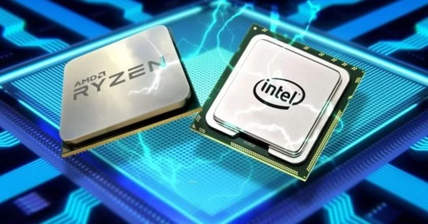

CPU (Unidade Central de Processamento)

1. O que é a CPU?
A CPU, ou Unidade Central de Processamento, é o componente do computador responsável por executar as instruções dos programas. É frequentemente referida como o "cérebro" do computador.
2. Funções da CPU
A CPU realiza operações aritméticas, lógicas e de controle com base nas instruções dos programas. Ela processa dados e coordena a operação de todos os outros componentes do computador.
3. Componentes Internos da CPU
- Unidade de Controle (CU): Gerencia e coordena as operações da CPU, direcionando o fluxo de dados.
- Unidade Lógica e Aritmética (ALU): Realiza cálculos e operações lógicas.
- Registradores: Pequenas unidades de armazenamento dentro da CPU que mantêm dados temporários.
- Cache: Memória de alta velocidade usada para armazenar dados e instruções frequentemente acessados.
4. Tipos de CPUs
- CPUs de Desktop: Projetadas para computadores de mesa, focadas em desempenho e eficiência energética.
- CPUs de Servidores: Otimizadas para servidores, com maior capacidade de processamento e suporte a múltiplas tarefas simultâneas.
- CPUs Móveis: Projetadas para dispositivos móveis, focando em baixo consumo de energia e operação eficiente.
- CPUs de Alta Performance: Usadas em estações de trabalho e servidores para tarefas que exigem alto desempenho, como processamento gráfico e cálculos científicos.
5. Evolução das CPUs
Desde os primeiros processadores, como o Intel 4004, até os modernos processadores multicore, as CPUs têm evoluído significativamente, aumentando em capacidade, eficiência e velocidade.
← Voltar para a página principal